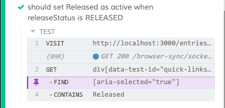
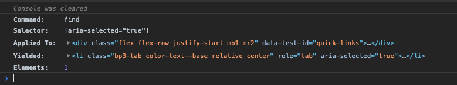

E2E with Cypress
Cypress is an end-to-end JavaScript testing framework for writing and automating UI tests. As of this writing, it runs in Canary, Chrome, Chromium and the Electron browser.
Why Cypress?
Developer Friendliness
Frontend engineers are increasingly becoming more involved in writing integration tests — a shift from previous practices where only QA engineers design and implement test strategies. This means frontend engineers will benefit from testing tools that are specifically designed for their workflow. Cypress fits our frontend engineers’ workflow for two reasons: Its debuggability, and its expressiveness.
Debuggability
Being able to run inside the browser means our tests run in the same loop as our application. This translates to better debug-ability. Cypress provides debug() and a way of handling debugger command and allows us to inspect with browser dev tools. Consider the following simple example:

We want a tab containing the text “Released” to be selected when a variable releaseStatus is set to RELEASED. Cypress lets us walk through the different commands and assertions and allows us to “time travel” to see how the interface looks like including how the markups and styles are rendered at certain points in time. Clicking on the FIND command as shown the previous screenshot yields the following in the devtools console:

This level of control and transparency surfaces significant information for our engineers when evaluating our tests which prove to be handy in implementing or addressing issues. Cypress also provides tools to easily trace where the test fails such as automatic screenshot or video recording.
Expressiveness
Using test frameworks and assertion libraries with APIs that are expressive improves the maintainability of any form of tests. Cypress provides descriptive APIs and its support for Behavior Driven Development BDD and Test Driven Development TDD assertion styles makes writing tests more expressive and intent-revealing.
In the following example, we can easily follow and understand the flow being tested — we visit http://localhost:3000 , attempt to login with email and password. Then, URL in the address bar should include a session parameter.
it('logs in',()=>{
cy.visit('http://localhost:3000');
cy.get('form')
.find('[type="email"]')
.type('my@email.com');
cy.get('form')
.find('[type="password"]')
.type('my-safe-password');
cy.get('form').submit();
cy.url().should('include','session');
});In other test frameworks, we might find convoluted sequence of commands or less expressive APIs just so we could achieve the flow above. This is particularly true in cases where additional lines are needed in order to handle waits/sleep with arbitrary numbers.
Less Flakiness
As with any modern web apps, many interactions are implemented to be asynchronous (async). In general, async API calls augment user experience as it provides better feedback about the UI state. However, with async requests, possibility of high latency and slow browser rendering, end-to-end tests tend to yield non-deterministic or flaky results. Flaky tests are tests that pass or fail at different runs. For instance, a test passes under normal conditions but fails when an expected DOM element did not appear in time due to delays in rendering or slow network.
We address flaky tests with Cypress’ built-in wait and retry-ability that come by defaul. Let’s take a look at the following:
it('should select Libraries tab by default',()=>{
cy.visit('http://localhost:3000/items');
cy.get('[data-test-id="tabs-list"]')
.find('[aria-selected="true"]')
.contains('Libraries');
});In the example above, we want to test that when a user logs into /items, the tab named Libraries is selected by default. Here, we need not explicitly call wait right after the .visit command just so we can be sure that the DOM is fully loaded when we perform a .get or .find. By default, these commands wait and retry to resolve before moving to the next command or assertion. In this case, .visit('http://localhost:3000/items'); does not resolve until all resources (JS, CSS and HTML) have been fully downloaded; And get('[data-test-id="tabs-list"]’) will keep retrying until the element with attribute-value pair data-test-id="tabs-list” eventually exists in the DOM. In Selenium webdriver, similar effect may be achieved with its wait and untilAPIs. For example, driver.wait(until.elementLocated(By.css(‘.tabList’))); . With FluentWait, timeout and polling frequency can also produce the automatic retries. With wait and retry happening by default and wrapped by simple functions, we do not need to explicitly call them.
Organizing tests
One defining trait that separates Cypress from other end-to-end test frameworks is its familiarity to frontend engineers being a JavaScript only test framework. This enables us to easily participate and incorporate end-to-end testing into our workflow. To further encourage more testing in our team, we organize our application such that Cypress is installed in the same repo as the web application being tested as opposed to the alternative of running it from another repo or service. This lets end-to-end tests to be managed better within the web application’s context where they are written.
Spec Files
We consider each page or view as one test spec and logical grouping of feature test cases. For instance, login and search pages have their own spec files. There are cases where tests from different specs rely on shared functions. Some examples are the auth functions which we want to happen before running tests for login/role-based views or pages. In such cases, we place those shared functions in Cypress support/commands.js.
Selectors
When writing tests, we augment our JSX markups with the attribute data-test-id. In our code example in the previous section, you find data-test-id="tabs-list" as the selector to get an element. It is ideal not to use class or id property when finding elements because these properties may change as requirements change. For instance, at one point the application uses Block-Element-Modifier CSS naming style where it uses <div className="tab">..., but a new feature that allows new themes to inverse the style would then need the same element to use tab--inverse. Consequently, tests become brittle as they require change with class property changes. Using data-test-id or any reasonable data-* ensures that our tests are decoupled from element properties that may change.
Running in the pipeline
In our CI we set up Cypress to run headlessly. In our Gitlab’s .yaml file, we first run a stage to perform the initial npm install which is then followed by the npm run test-e2e. Running test-e2e starts the server using start-server-and-test library which waits for the server to successfully run first before executing the tests. When deploying to production, we simply instruct our bundler to remove the test attributes data-test-id from our JSX markups in our builds.